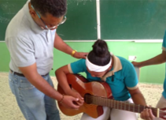
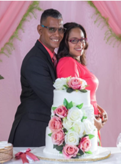

Un Mensaje de Esperanza a través de la Música y el Arte
Emmanuel Polanco es un talentoso músico, compositor, periodista y educador cuya pasión por la música, la comunicación y el arte ha dejado una huella inspiradora en múltiples facetas de su vida. Nacido en el seno de un hogar cristiano, Emmanuel creció rodeado de influencias musicales profundamente arraigadas en su familia, marcando el inicio de un viaje que fusionaría su amor por la música, el arte y su fe en Cristo y un mensaje de esperanza compartido.
Desde temprana edad, su amor por la música fue evidente, lo que lo impulsó a perseguir sus sueños y crear un impacto significativo en la vida de los demás. Influenciado musicalmente cuando de niño escuchaba cantar a sus padres en el hogar, Emmanuel desarrolló un profundo aprecio por la expresión musical auténtica y emotiva.
Durante su adolescencia, asistió a la prestigiosa Academia Franciscana de Barahona, donde estudió música y solfeo. Aunque inicialmente se sintió atraído por el piano, pronto descubrió su pasión por la guitarra, un instrumento que se convirtió en una extensión de su creatividad y expresión artística. A lo largo de los años, ha compuesto decenas de canciones que reflejan sus experiencias, emociones y la búsqueda constante de la belleza en la música.
No contento con centrarse únicamente en la música, Emmanuel también persiguió su interés por el periodismo y se graduó como periodista en 2010. Su habilidad para conectar con el público y contar historias cautivadoras lo convirtió en un destacado profesional de los medios de comunicación. Trabajó como presentador de noticias en Artv-Sur, el canal local de su ciudad natal y participó en proyectos radiales en emisoras en línea, incluyendo Urbana 96 y Agresiva Radio.
En 2015, Emmanuel dio un giro en su carrera al concursar como maestro en el sistema educativo dominicano. Después de habilitarse como maestro ha dedicado varios años de su vida a impartir clases de religión y educación artística, compartiendo su conocimiento y pasión con las generaciones más jóvenes. Su influencia en el aula inspiró a otros jóvenes a explorar sus propios talentos artísticos, incluyendo al cantante Bolívar Batista, quien fue influenciado artísticamente por Emmanuel durante cinco años.
El complemento musical en su vida se hizo aún más evidente cuando Emmanuel se casó con Madelin Feliz Cuevas en diciembre del 2019, una cantante talentosa. La unión con Madelin ha sido un impulso invaluable para su visión ministerial, fortaleciendo su propósito de llevar música y un mensaje de esperanza a un público más amplio.
Sin embargo, su sueño siempre fue más grande. Emmanuel anhelaba combinar su amor por la música y su profunda fe en Cristo, en un ministerio musical. Estudió canto de forma más profesional formado por la talentosa y exitosa cantante cristiana María Teresa Heredia; egresado de la Escuela de Canto, del Centro Cultural María Montez, de Barahona, del Ministerio de Cultura de la República Dominicana.
En agosto del 2023, dio un paso audaz al grabar su primer sencillo, titulado “A su Gloria y Majestad”, marcando el comienzo de un nuevo capítulo en su carrera artística.
El 1ro de septiembre del 2023 formó la banda musical llamada “Cautivos por Cristo”, compuesta por los mejores músicos entre sus viejos amigos de infancia que comparten su pasión por la música. Inspirado por su deseo de llevar esperanza y un mensaje positivo a las personas, se propone dar conciertos en los parques de las ciudades, interpretando una variedad de géneros musicales que van desde Rock, pop, Rock-pop, Bolero, Merengue, balada, son, jazz, blues, hip hop, worship, fusiones, entre otros géneros musicales.
Juntos, están comprometidos en llevar su música y mensaje a un público más amplio, tocando los corazones de aquellos que necesitan que Jesús les de una dosis de esperanza y alegría a sus vidas.
La historia de Emmanuel es un testimonio inspirador de cómo la pasión, la perseverancia y el deseo de hacer el bien pueden converger en una hermosa sinfonía de logros y propósito. A través de la música y su dedicación a difundir el mensaje de esperanza, que trae el evangelio. Emmanuel continúa impactando positivamente a las personas y dejando una huella duradera en el mundo.